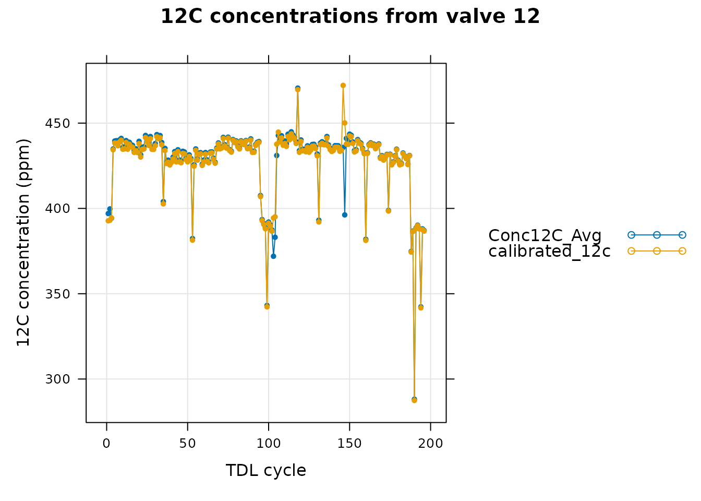
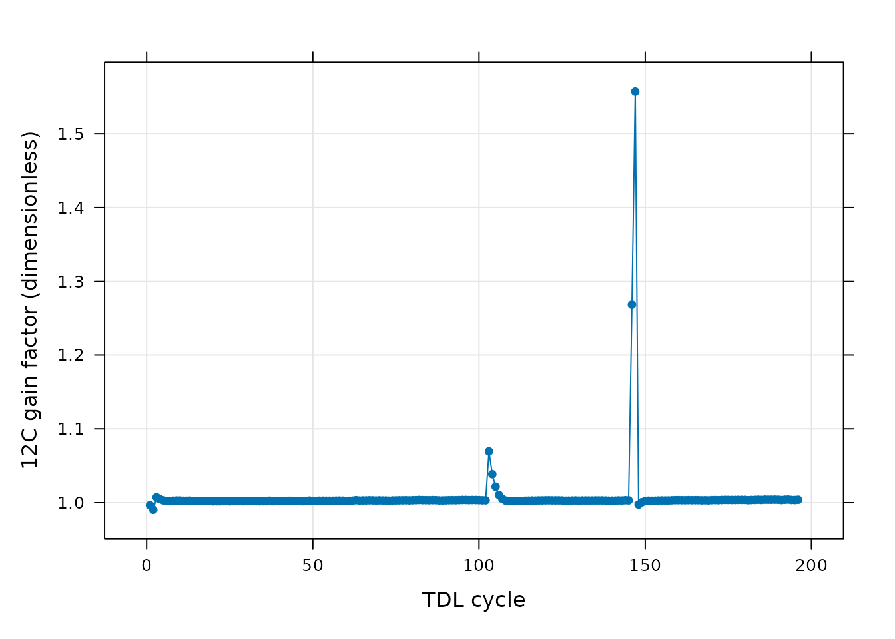
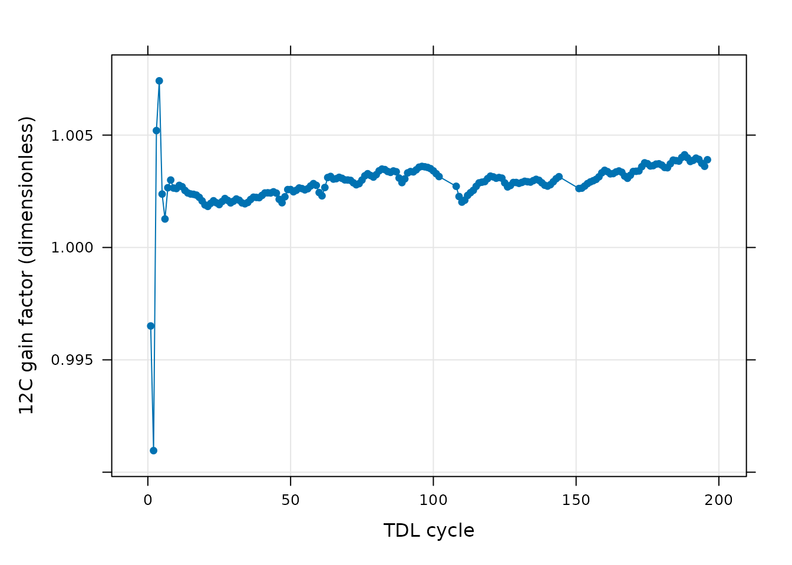

Overview
In this vignette, we will give an example showing how to analyze data
from a tunable diode laser (TDL) using the PhotoGEA
package. The commands in this vignette can be used to initialize your
own script, as described in Customizing Your Script.
Background
Because the process of photosynthesis tends to preferentially assimilate 12C more often than the rarer and heavier stable isotope 13C, carbon isotope discrimination measurements have proven to be incredibly useful in the fields of plant biology and climate science (Evans and Caemmerer 2013). Although several methods are available for measuring the relative concentrations of 12C and 13C gas mixtures, tunable diode laser (TDL) absorption spectroscopy has emerged as one of the most popular due to its high sensitivity and relatively short measurement times. In this technique, the emission wavelength of the laser is tuned over the characteristic absorption lines of species present in a gas, and the resulting decrease in light transmission can be used to determine the gas concentration and even other properties such as temperature. For more information about the general technique, please see its Wikipedia page.
The gas concentrations reported directly by a TDL measurement system tend to be influenced by electrical noise and subtle changes in air properties within the measurement room. For this reason, it is usually necessary to make frequent measurements of gas mixtures with known concentrations so the output signals can be calibrated. In fact, most TDL systems used in plant biology include a gas handling system with multiple valves that can be attached to various gas sources, including calibration tanks as well as the lines with gas whose isotopic makeup is to be determined. During measurement, the gas handling system periodically cycles through each valve in succession, and a data logger is used to record the TDL output signal from each valve. These “TDL cycles” are the basic unit of a TDL measurement. A typical output file from a TDL being used for carbon isotope discrimination measurements therefore includes the following columns (at minimum): time stamp, valve number, raw 12C concentration, and raw 13C concentration.
To analyze such a data set, it is necessary to identify the
individual TDL cycles within the entire set and use the calibration
valves to determine accurate gas concentrations in the other valves.
Additional operations may also be required, such as removing cycles that
seem to be unreliable or smoothing the data before calibration to
decrease noise. In this vignette, we will demonstrate several tools from
the PhotoGEA package that can help to streamline these
operations in the R environment.
Loading Packages
As always, the first step is to load the packages we will be using.
In addition to PhotoGEA, we will also use the
lattice package for generating plots.
If the lattice package is not installed on your R setup,
you can install it by typing
install.packages('lattice').
Loading TDL Data
The PhotoGEA package includes two files representing TDL
data that was recorded with a Campbell Scientific CR3000 data logger on
two consecutive days. Although these two files are based on real data,
noise was added to it since it is unpublished, so these files should
only be used as examples.
The files will be stored on your computer somewhere in your R package
installation directory, and full paths to these files can be obtained
with PhotoGEA_example_file_path:
# Define a vector of paths to the files we wish to load; in this case, we are
# loading example files included with the PhotoGEA package
file_paths <- c(
PhotoGEA_example_file_path('tdl_sampling_1.dat'),
PhotoGEA_example_file_path('tdl_sampling_2.dat')
)(Note: When loading your own files for analysis, it
is not advisable to use PhotoGEA_example_file_path as we
have done here. Instead, file paths can be directly written, or files
can be chosen using an interactive window. See Input Files below for more information.)
To actually read the data in the files and store them in R objects,
we will use the read_gasex_file function from
PhotoGEA. Since there are multiple files to read, we will
call this function once for each file using lapply:
# Load each file, storing the result in a list
tdl_exdf_list <- lapply(file_paths, function(fpath) {
read_gasex_file(fpath, 'TIMESTAMP')
})The result from this command is an R list of “extended data frames”
(abbreviated as exdf objects). The exdf class
is a special data structure defined by the PhotoGEA
package. In many ways, an exdf object is equivalent to a
data frame, with the major difference being that an exdf
object includes the units of each column. For more information, type
?exdf in the R terminal to access the built-in help menu
entry, or check out the Working With Extended Data
Frames vignette.
Generally, it is more convenient to work with a single
exdf object rather than a list of them, so our next step
will be to combine the objects in the list. This action can be
accomplished using the rbind function, which combines
table-like objects by their rows; in other words, it stacks two or more
tables vertically. This action only makes sense if the tables have the
same columns, so before we combine the exdf objects, we
should make sure this is the case.
The PhotoGEA package includes a function called
identify_common_columns that can be used to get the names
of all columns that are present in all of the TDL files. Then, we can
extract just those columns, and then combine the exdf
objects into a single one.
# Get the names of all columns that are present in all of the TDL files
columns_to_keep <- do.call(identify_common_columns, tdl_exdf_list)
# Extract just these columns
tdl_exdf_list <- lapply(tdl_exdf_list, function(x) {
x[ , columns_to_keep, TRUE]
})
# Use `rbind` to combine all the data
tdl_files <- do.call(rbind, tdl_exdf_list)Now we have a single R object called tdl_files that
includes all the data from several TDL data files. For more information
about consolidating information from multiple files, see the Common
Patterns section of the Working
With Extended Data Frames vignette.
Identifying TDL Cycles
The first step when analyzing TDL data is to identify the “TDL cycles” that are present within it. To do that, we need to know the following information:
- The name of the column in the TDL data that indicates which valve is being measured.
- The valve number that marks the beginning of a new cycle.
- How many valves are measured in each cycle.
- The name of the column in the TDL data that indicates the time at which each measurement was made.
- The amount of time it should take to cycle through the valves.
This information is usually known beforehand from the settings that
were specified when operating the TDL; alternatively, if it isn’t known
already, it can often be determined by taking a look at the data via
View(tdl_files). Once this information is obtained, the
identify_tdl_cycles function from the PhotoGEA
package can be used to automatically assign a number to each measurement
cycle:
# Assign numbers to all full cycles in the data set
tdl_files <- identify_tdl_cycles(
tdl_files,
valve_column_name = 'valve_number',
cycle_start_valve = 20,
expected_cycle_length_minutes = 2.7,
expected_cycle_num_valves = 9,
timestamp_colname = 'TIMESTAMP'
)Now the tdl_files object has two new columns: one is
called cycle_num and specifies each TDL cycle, and the
other is called elapsed_time and indicates the elapsed time
at the start of each cycle.
Processing TDL Cycles
Now that the individual cycles have been identified, the next step is to use the reference valves to calibrate the TDL readings. In general, this procedure will depend strongly on the individual TDL system, since each one may have different types of reference tanks. The data used in this vignette was measured using the TDL in Carl Bernacchi’s lab in the Edward R. Madigan Laboratory at the University of Illinois, Urbana-Champaign. It includes five reference tanks that can be broken into three types:
- One is a certified tank whose total CO2 concentration and carbon isotope ratio are supplied from NOAA.
- One is a nitrogen tank that should have no carbon in it.
- The final type of reference is another CO2 tank whose isotype ratio was measured at UIUC using a different method; this tank is mixed with nitrogen in three different ratios to provide a range of carbon concentrations.
The full procedure for using these references to calibrate the TDL
signal is somewhat complicated. Fortunately, it is easy to determine and
apply the calibrations for a single TDL cycle using the
process_tdl_cycle_erml function from PhotoGEA.
To apply this function to each TDL cycle in a larger data set and then
consolidate the results, we can use it in conjunction with
by and consolidate, which are also part of
PhotoGEA. (For more information about these functions, see
the built-in help menu entries by typing
?process_tdl_cycle_erml, ?by.exdf, or
?consolidate, or check out the Common Patterns
section of the Working
With Extended Data Frames vignette.) As with the previous function,
many of the inputs here (such as
noaa_cylinder_isotope_ratio) must be obtained from whoever
is managing the TDL system being used:
# Use the data from the calibration valves to determine calibrated carbon
# concentrations from all valves in each TDL cycle
processed_tdl <- consolidate(by(
tdl_files,
tdl_files[, 'cycle_num'],
process_tdl_cycle_erml,
valve_column_name = 'valve_number',
noaa_valve = 2,
calibration_0_valve = 20,
calibration_1_valve = 21,
calibration_2_valve = 23,
calibration_3_valve = 26,
raw_12c_colname = 'Conc12C_Avg',
raw_13c_colname = 'Conc13C_Avg',
noaa_cylinder_co2_concentration = 294.996,
noaa_cylinder_isotope_ratio = -8.40,
calibration_isotope_ratio = -11.505
))The output from this function – processed_tdl – is a
list of several exdf objects that include calibrated TDL
readings from each valve and information about the calibration
parameters that were determined while processing the data.
Checking the Calibrated Data
Typically it is a good idea to check over the raw data, calibrated
data, and calibration constants for any issues that might affect the
reliability of the results. Since there are many valves involved and the
calibration involves several different steps (see
?process_tdl_cycle_erml), there are also many possible
things to check. A full check of the data might require creating and
viewing many different plots.
Here we will first take a look at the raw and calibrated values of
12C from each valve. This information is stored in the
tdl_data element of processed_tdl. The
lattice library makes it simple to include each valve as
its own separate subplot of a figure, with the raw and calibrated values
as separate traces. Our goal is simply to keep an eye out for anythign
that looks unusual in the data.
# Plot the 12C concentration data from all the valves
xyplot(
Conc12C_Avg + calibrated_12c ~ cycle_num | factor(valve_number),
data = processed_tdl$tdl_data$main_data,
type = 'p',
pch = 20,
auto = TRUE,
grid = TRUE,
xlab = paste0('Elapsed time (', processed_tdl$tdl_data$units$cycle_num, ')'),
ylab = paste0('12C concentration (', processed_tdl$tdl_data$units$Conc12C_Avg, ')'),
main = '12C concentrations'
)In this figure, it is apparent that valves 23 and 26 have large spikes, which is surprising since these are calibration valves; the gas flowing to the TDL from these valves is expected to have a fairly constant carbon concentration. It is possible to view just one valve at a time for more detailed analysis. Here we will take a look at the 12C concentration from valve 26, which exhibits a spike.
# Specify a single valve to plot
valve_to_plot <- 26
# Get the processed data from the single valve
single_valve <-
processed_tdl$tdl_data[processed_tdl$tdl_data[, 'valve_number'] == valve_to_plot, , TRUE]
# Plot the 12C concentration data from the single valve
xyplot(
Conc12C_Avg + calibrated_12c ~ cycle_num,
data = single_valve$main_data,
type = 'b',
pch = 20,
auto = TRUE,
grid = TRUE,
xlab = 'TDL cycle',
ylab = paste0('12C concentration (', single_valve$units$Conc12C_Avg, ')'),
main = paste('12C concentrations from valve', valve_to_plot)
)In this graph, we can see that the calibrated 12C concentration has a large deviation from the raw values near the large spike, although the calibrated and raw values are generally very similar in the rest of the data. In fact, we can see that in valve 12 (one of the valves whose composition we are trying to determine), there is also a large deviation between the raw and calibrated 12C signals near the spike.

Finally, we can also see traces of this anomaly in the calibration constants determined during the TDL cycle processing. In this plot, the 12C gain factor is nearly constant at all times with the exception of the cycles where there is also a spike in the 12C signal in valve 26.
# Plot the 12C gain factor determined during the calibration process
xyplot(
gain_12CO2 ~ cycle_num,
data = processed_tdl$calibration_12CO2$main_data,
type = 'b',
pch = 16,
grid = TRUE,
xlab = 'TDL cycle',
ylab = paste0('12C gain factor (', processed_tdl$calibration_12CO2$units$gain_12CO2, ')')
)
Processing TDL Cycles (With Removal and Smoothing)
In Processing TDL Cycles, we processed the full contents of the raw TDL file. However, users sometimes with to remove unreliable cycles or apply smoothing functions to some valves before processing the data. In this section, we demonstrate how to do this.
Removing Problematic Cycles
In Checking the Calibrated Data, we located a spike in the measured 12C concentration from valve 26, which is one of the calibration values. Since the presence of this spike indicates that something unexpected happened to the TDL system, and there is evidence that the calibration may be compromised during the spike, it is probably a good idea to remove the TDL cycles where the 12C signal from valve 26 suddenly becomes large.
Fortunately, this is simple to do using the
remove_points function from PhotoGEA. The
following illustrates how to “clean” the data by removing the unreliable
TDL cycles; here, we actually remove two regions of the data that appear
to be suspicious:
# Define a vector of cycle numbers that should be removed
tdl_cycles_to_remove <- c(
145:150, # The big spike in valve 26
103:107 # A smaller spike in valve 26
)
# Remove them
tdl_files_clean <-
remove_points(tdl_files, list(cycle_num = tdl_cycles_to_remove))Smoothing the TDL Data
Since TDL signals are susceptible to several types of noise and the composition of gas from the calibration tanks is expected to be relatively constant, it is safe to assume that any high-frequency variations in the calibration valve signals are due to noise. For this reason, it may be helpful to smooth the data from the calibration valves before processing the TDL cycles. This may reduce noise in the calibrated values from the “unknown” valves.
There are many possible strategies for smoothing the time series of
values measured from a valve, and the PhotoGEA package does
not attempt to provide its own smoothing algorithms. Instead,
PhotoGEA provides a general function called
smooth_tdl_data that can apply a smoothing function to the
data from one valve. To use this function, a user must specify their own
smoothing method. (For more information, see the help menu entry by
typing ?smooth_tdl_data.) Here we will show how the spline
smoothing function from the base R package can be used to smooth the
12C and 13C signals from the calibration
valves:
# Define a spline smoothing function
spline_smoothing_function <- function(Y, X) {
ss <- smooth.spline(X, Y)
return(ss$y)
}
# Specify the valves that should be smoothed
valves_to_smooth <- c(2, 20, 21, 23, 26)
# Initialize a smoothed copy of the data
tdl_files_smooth <- tdl_files_clean
# Apply the smoothing function to the 12C and 13C signal from each valve
for (valve in valves_to_smooth) {
for (column in c('Conc12C_Avg', 'Conc13C_Avg')) {
tdl_files_smooth <- smooth_tdl_data(
tdl_files_smooth,
column,
'valve_number',
valve,
spline_smoothing_function
)
}
}Checking the Data After Cleaning and Smoothing
Now that we have removed some problematic cycles and applied a spline smoothing function to the calibration valves, we can process the TDL cycles again using the same command from Processing TDL Cycles; the only difference here is that we are operating on the smoothed data:
# Use the data from the calibration valves to determine calibrated carbon
# concentrations from all valves in each TDL cycle
processed_smooth_tdl <- consolidate(by(
tdl_files_smooth,
tdl_files_smooth[, 'cycle_num'],
process_tdl_cycle_erml,
valve_column_name = 'valve_number',
noaa_valve = 2,
calibration_0_valve = 20,
calibration_1_valve = 21,
calibration_2_valve = 23,
calibration_3_valve = 26,
raw_12c_colname = 'Conc12C_Avg',
raw_13c_colname = 'Conc13C_Avg',
noaa_cylinder_co2_concentration = 294.996,
noaa_cylinder_isotope_ratio = -8.40,
calibration_isotope_ratio = -11.505
))It is important to confirm that the smoothing procedure has produced reasonable outputs. Here we create a plot comparing the raw and smoothed 12C signal from all valves:
# Add columns indicating which which operations have been applied to each exdf
tdl_files[ , 'data_type'] <- '01 raw data'
tdl_files_clean[ , 'data_type'] <- '02 cleaned data'
tdl_files_smooth[ , 'data_type'] <- '03 cleaned smoothed data'
# Make a big exdf object with the raw and smoothed data
tdl_compare <- rbind(tdl_files, tdl_files_clean, tdl_files_smooth)
# Keep only the valves that were smoothed
tdl_compare <-
tdl_compare[tdl_compare[ , 'valve_number'] %in% valves_to_smooth, , TRUE]
# Plot the uncalibrated 12C concentration data from all the valves
xyplot(
Conc12C_Avg ~ cycle_num | factor(valve_number),
group = data_type,
data = tdl_compare$main_data,
type = 'b',
pch = 20,
auto = TRUE,
grid = TRUE,
xlab = 'TDL cycle',
ylab = paste0('Uncalibrated 12C concentration (', tdl_compare$tdl_data$units$Conc12C_Avg, ')'),
main = 'Uncalibrated 12C concentrations'
)Although it is clear that we have successfully removed the spikes from valve 26, it may be helpful to display just that valve to take a closer look:
# Specify a single valve to plot
valve_to_compare <- 26
# Get the comparison data from the single valve
single_valve_compare <-
tdl_compare[tdl_compare[, 'valve_number'] == valve_to_compare, , TRUE]
# Plot the 12C concentration data from the single valve
xyplot(
Conc12C_Avg ~ cycle_num,
group = data_type,
data = single_valve_compare$main_data,
type = 'b',
pch = 20,
auto = TRUE,
grid = TRUE,
xlab = 'TDL cycle',
ylab = paste0('Uncalibrated 12C concentration (', single_valve_compare$units$Conc12C_Avg, ')'),
main = paste('Uncalibrated 12C concentrations from valve', valve_to_compare)
)In this graph we can see that the spike was indeed removed and that the smoothed data does a good job of following the raw data for this valve. As another check, we can also see how the smoothed data is altered after the calibration process. Here we will look at valve 12, as in Checking the Calibrated Data:
# Specify a single valve to plot
valve_to_plot <- 12
# Get the processed data from the single valve
single_valve_smooth <- processed_smooth_tdl$tdl_data[
processed_smooth_tdl$tdl_data[, 'valve_number'] == valve_to_plot, , TRUE]
# Plot the 12C concentration data from the single valve
xyplot(
Conc12C_Avg + calibrated_12c ~ cycle_num,
data = single_valve_smooth$main_data,
type = 'b',
pch = 20,
auto = TRUE,
grid = TRUE,
xlab = 'TDL cycle',
ylab = paste0('12C concentration (', single_valve_smooth$units$Conc12C_Avg, ')'),
main = paste('12C concentrations from valve', valve_to_plot)
)Here we see that after cleaning and smoothing the data, the calibrated data from this “unknown” valve is only slightly different than its raw data across all the cycles. Finally, we can also plot the 12C gain factor as in Checking the Calibrated Data:
# Plot the 12C gain factor determined during the calibration process
xyplot(
gain_12CO2 ~ cycle_num,
data = processed_smooth_tdl$calibration_12CO2$main_data,
type = 'b',
pch = 16,
grid = TRUE,
xlab = 'TDL cycle',
ylab = paste0('12C gain factor (', processed_smooth_tdl$calibration_12CO2$units$gain_12CO2, ')')
)
Again, there are no sudden spikes remaining in the gain factor, indicating that we did a good job of cleaning and smoothing the data.
Next steps
Having cleaned, smoothed, and visually checked the data, we can now be confident that the calibrated 12C and 13C values are as accurate as they can be. The next step in the analysis would be to interpret the data from the valves whose composition is unknown and to be determined. This will depend on your particular application, so we cannot give general advice here!
Customizing Your Script
Note that most of the commands in this vignette have been written in a general way so they can be used as the basis for your own TDL analysis script (see Commands From This Document). In order to use them in your own script, some or all of the following changes may be required. There may also be others not specifically mentioned here.
Input Files
The file paths specified in file_paths will need to be
modified so they point to your TDL files. One way to do this in your own
script is to simply write out relative or absolute paths to the files
you wish to load. For example, you could replace the previous definition
of file_paths with this one:
# Define a vector of paths to the files we wish to load
file_paths <- c(
'myfile1.dat', # `myfile1.dat` must be in the current working directory
'C:/documents/myfile2.dat' # This is an absolute path to `myfile2.dat`
)You may also want to consider using the
choose_input_tdl_files function from PhotoGEA;
this function will create a pop-up browser window where you can
interactively select a set of files. Sometimes this is more convenient
than writing out file paths or names. For example, you could replace the
previous definition of file_paths with this one:
# Interactively define a vector of paths to the files we wish to load
file_paths <- choose_input_tdl_files()Unfortunately, choose_input_tdl_files is only available
in interactive R sessions running on Microsoft Windows, but there is
also a platform-independent option: choose_input_files. See
the Translation section of the Developing a
Data Analysis Pipeline vignette for more details.
Plots for Checking
To keep this vignette shorter, we skipped out on many possible plots that you may want to view. In addition to the ones generated here, it may also be helpful to make the following plots:
- Plots of 13C signals in addition to plots of 12C.
- Individual plots of the raw, cleaned, and smoothed data for each valve.
- Plots of the 13C calibration constants.
- Plots of the 13C calibration fits.
These plots can all be created by making small modifications to the commands in this document.
Cycles to Remove
When beginning to analyze a new data set, it is advisable to not
remove any TDL cycles; this can be accomplished by defining
tdl_cycles_to_remove with the following command in place of
the one used above:
tdl_cycles_to_remove <- c()After viewing all of the data, unreliable cycles that should be removed can be identified.
Smoothing Function
When beginning to analyze a new data set, it is advisable to disable smoothing. This can be done by definining a “null” smoothing function; in other words, a function that does not actually perform any smoothing:
# Define a null smoothing function
null_smoothing_function <- function(Y, X) {return(Y)}Then, this function should be passed to smooth_tdl_data
in place of spline_smoothing_function.
Commands From This Document
The following code chunk includes all the central commands used throughout this document. They are compiled here to make them easy to copy/paste into a text file to initialize your own script. Annotation has also been added to clearly indicate the four steps involved in data analysis, as described in the Developing a Data Analysis Pipeline vignette.
###
### PRELIMINARIES:
### Loading packages, defining constants, creating helping functions, etc.
###
# Load required packages
library(PhotoGEA)
library(lattice)
###
### TRANSLATION:
### Creating convenient R objects from raw data files
###
## IMPORTANT: When loading your own files, it is not advised to use
## `PhotoGEA_example_file_path` as in the code below. Instead, write out the
## names or use the `choose_input_tdl_files` function.
# Define a vector of paths to the files we wish to load; in this case, we are
# loading example files included with the PhotoGEA package
file_paths <- c(
PhotoGEA_example_file_path('tdl_sampling_1.dat'),
PhotoGEA_example_file_path('tdl_sampling_2.dat')
)
# Load each file, storing the result in a list
tdl_exdf_list <- lapply(file_paths, function(fpath) {
read_gasex_file(fpath, 'TIMESTAMP')
})
# Get the names of all columns that are present in all of the TDL files
columns_to_keep <- do.call(identify_common_columns, tdl_exdf_list)
# Extract just these columns
tdl_exdf_list <- lapply(tdl_exdf_list, function(x) {
x[ , columns_to_keep, TRUE]
})
# Use `rbind` to combine all the data
tdl_files <- do.call(rbind, tdl_exdf_list)
###
### VALIDATION:
### Organizing the data, checking its consistency and quality, cleaning it
###
# Assign numbers to all full cycles in the data set
tdl_files <- identify_tdl_cycles(
tdl_files,
valve_column_name = 'valve_number',
cycle_start_valve = 20,
expected_cycle_length_minutes = 2.7,
expected_cycle_num_valves = 9,
timestamp_colname = 'TIMESTAMP'
)
# Define a vector of cycle numbers that should be removed
tdl_cycles_to_remove <- c(
145:150, # The big spike in valve 26
103:107 # A smaller spike in valve 26
)
# Remove them
tdl_files_clean <-
remove_points(tdl_files, list(cycle_num = tdl_cycles_to_remove))
# Define a spline smoothing function
spline_smoothing_function <- function(Y, X) {
ss <- smooth.spline(X, Y)
return(ss$y)
}
# Specify the valves that should be smoothed
valves_to_smooth <- c(2, 20, 21, 23, 26)
# Initialize a smoothed copy of the data
tdl_files_smooth <- tdl_files_clean
# Apply the smoothing function to the 12C and 13C signal from each valve
for (valve in valves_to_smooth) {
for (column in c('Conc12C_Avg', 'Conc13C_Avg')) {
tdl_files_smooth <- smooth_tdl_data(
tdl_files_smooth,
column,
'valve_number',
valve,
spline_smoothing_function
)
}
}
###
### PROCESSING:
### Extracting new pieces of information from the data
###
# Use the data from the calibration valves to determine calibrated carbon
# concentrations from all valves in each TDL cycle
processed_smooth_tdl <- consolidate(by(
tdl_files_smooth,
tdl_files_smooth[, 'cycle_num'],
process_tdl_cycle_erml,
valve_column_name = 'valve_number',
noaa_valve = 2,
calibration_0_valve = 20,
calibration_1_valve = 21,
calibration_2_valve = 23,
calibration_3_valve = 26,
raw_12c_colname = 'Conc12C_Avg',
raw_13c_colname = 'Conc13C_Avg',
noaa_cylinder_co2_concentration = 294.996,
noaa_cylinder_isotope_ratio = -8.40,
calibration_isotope_ratio = -11.505
))
###
### SYNTHESIS:
### Using plots and statistics to help draw conclusions from the data
###
# Add columns indicating which which operations have been applied to each exdf
tdl_files[ , 'data_type'] <- '01 raw data'
tdl_files_clean[ , 'data_type'] <- '02 cleaned data'
tdl_files_smooth[ , 'data_type'] <- '03 cleaned smoothed data'
# Make a big exdf object with the raw and smoothed data
tdl_compare <- rbind(tdl_files, tdl_files_clean, tdl_files_smooth)
# Keep only the valves that were smoothed
tdl_compare <-
tdl_compare[tdl_compare[ , 'valve_number'] %in% valves_to_smooth, , TRUE]
# Plot the uncalibrated 12C concentration data from all the valves
xyplot(
Conc12C_Avg ~ cycle_num | factor(valve_number),
group = data_type,
data = tdl_compare$main_data,
type = 'b',
pch = 20,
auto = TRUE,
grid = TRUE,
xlab = 'TDL cycle',
ylab = paste0('Uncalibrated 12C concentration (', tdl_compare$tdl_data$units$Conc12C_Avg, ')'),
main = 'Uncalibrated 12C concentrations'
)
# Specify a single valve to plot
valve_to_compare <- 26
# Get the comparison data from the single valve
single_valve_compare <-
tdl_compare[tdl_compare[, 'valve_number'] == valve_to_compare, , TRUE]
# Plot the 12C concentration data from the single valve
xyplot(
Conc12C_Avg ~ cycle_num,
group = data_type,
data = single_valve_compare$main_data,
type = 'b',
pch = 20,
auto = TRUE,
grid = TRUE,
xlab = 'TDL cycle',
ylab = paste0('Uncalibrated 12C concentration (', single_valve_compare$units$Conc12C_Avg, ')'),
main = paste('Uncalibrated 12C concentrations from valve', valve_to_compare)
)
# Specify a single valve to plot
valve_to_plot <- 12
# Get the processed data from the single valve
single_valve_smooth <- processed_smooth_tdl$tdl_data[
processed_smooth_tdl$tdl_data[, 'valve_number'] == valve_to_plot, , TRUE]
# Plot the 12C concentration data from the single valve
xyplot(
Conc12C_Avg + calibrated_12c ~ cycle_num,
data = single_valve_smooth$main_data,
type = 'b',
pch = 20,
auto = TRUE,
grid = TRUE,
xlab = 'TDL cycle',
ylab = paste0('12C concentration (', single_valve_smooth$units$Conc12C_Avg, ')'),
main = paste('12C concentrations from valve', valve_to_plot)
)
# Plot the 12C gain factor determined during the calibration process
xyplot(
gain_12CO2 ~ cycle_num,
data = processed_smooth_tdl$calibration_12CO2$main_data,
type = 'b',
pch = 16,
grid = TRUE,
xlab = 'TDL cycle',
ylab = paste0('12C gain factor (', processed_smooth_tdl$calibration_12CO2$units$gain_12CO2, ')')
)